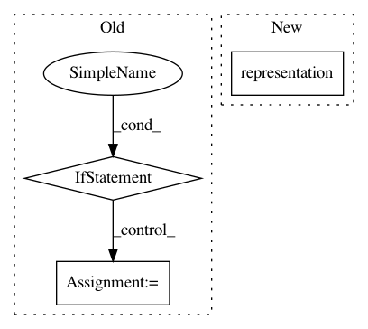

2525cc3906a97436d2abdccf3bdc2decb7bf0ac0,gpytorch/lazy/lazy_variable.py,LazyVariable,matmul,#LazyVariable#Any#,410
Before Change
Returns:
- tensor
if not hasattr(self, "_matmul_class"):
self._matmul_class = function_factory.matmul_factory(self._matmul_closure_factory,
self._derivative_quadratic_form_factory,
self._t_matmul_closure_factory)
lazy_var = self
if lazy_var.ndimension() == 3 and tensor.ndimension() == 3:
if lazy_var.size(0) == 1 and tensor.size(0) > 1:
lazy_var = lazy_var.repeat(tensor.size(0), 1, 1)
After Change
raise RuntimeError
func = Matmul(self.representation_tree())
return func(tensor, *self.representation())
def mul(self, other):
In pattern: SUPERPATTERN
Frequency: 3
Non-data size: 3
Instances
Project Name: cornellius-gp/gpytorch
Commit Name: 2525cc3906a97436d2abdccf3bdc2decb7bf0ac0
Time: 2018-04-30
Author: gpleiss@gmail.com
File Name: gpytorch/lazy/lazy_variable.py
Class Name: LazyVariable
Method Name: matmul
Project Name: cornellius-gp/gpytorch
Commit Name: 60a342edc8b501802135df44869353cc8604d838
Time: 2018-01-11
Author: gpleiss@gmail.com
File Name: gpytorch/lazy/kronecker_product_lazy_variable.py
Class Name: KroneckerProductLazyVariable
Method Name: _matmul_closure_factory
Project Name: cornellius-gp/gpytorch
Commit Name: 2525cc3906a97436d2abdccf3bdc2decb7bf0ac0
Time: 2018-04-30
Author: gpleiss@gmail.com
File Name: gpytorch/lazy/lazy_variable.py
Class Name: LazyVariable
Method Name: inv_matmul